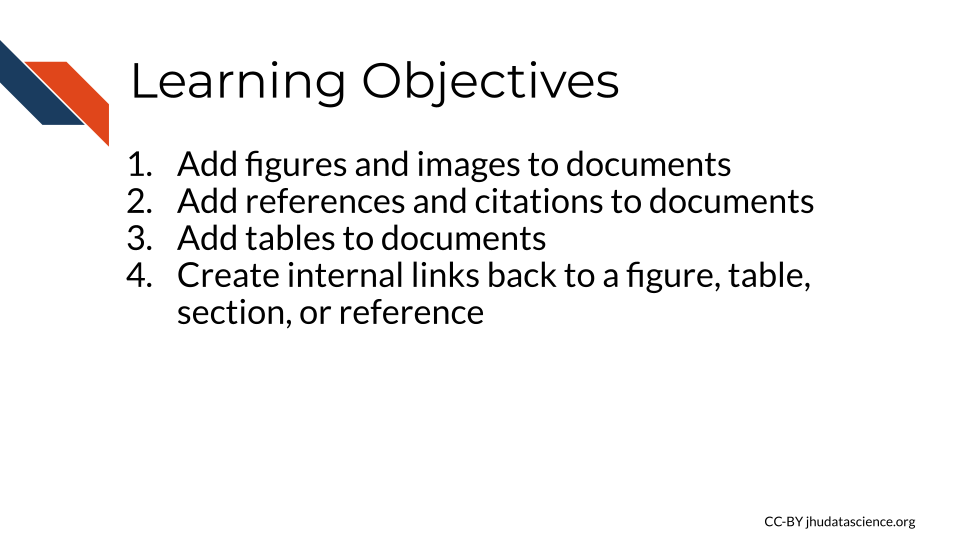
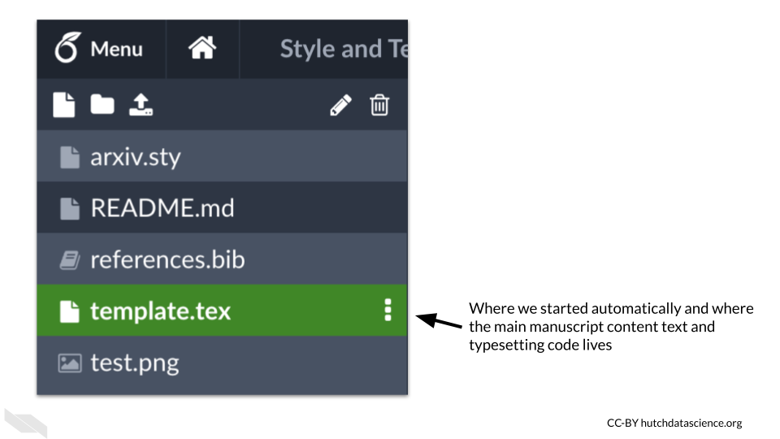
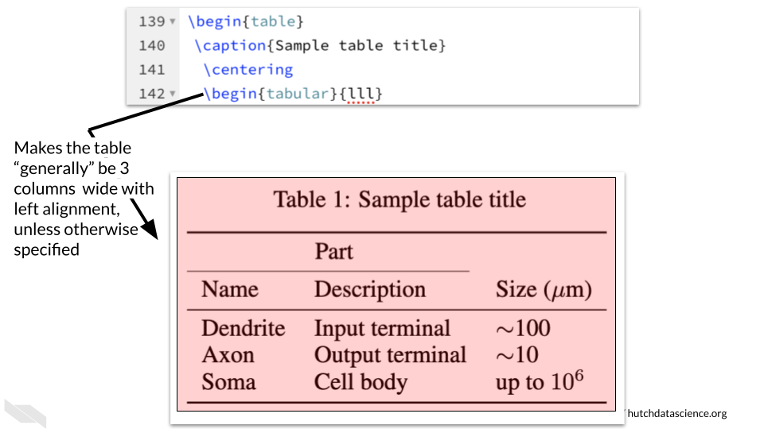
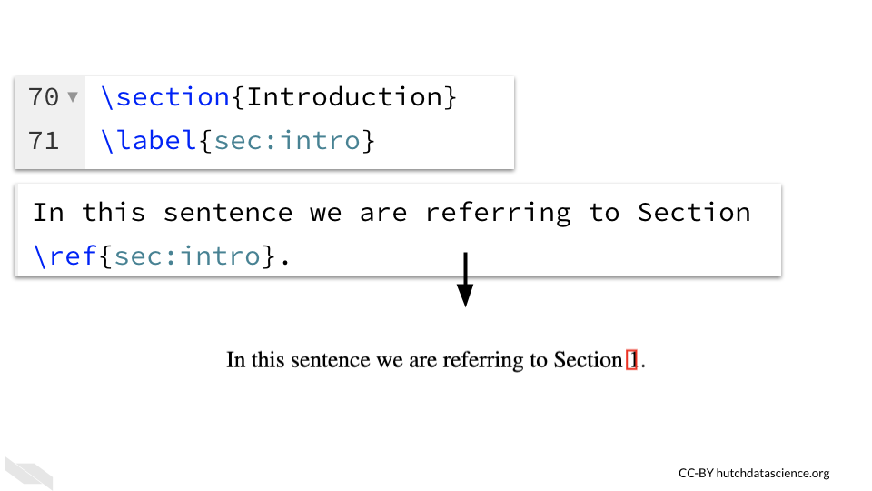

Chapter 5 Elements
Figures & tables & citations, oh my!
Now that you know some of the basics about how to add text to a template, let’s look at adding other elements that are important for scientific communication, like adding figures and images, adding tables, and adding references/citations. In this next chapter, we will introduce how to do this in LaTeX/Overleaf.
## Auto-refreshing stale OAuth token.## Warning in pptx_notes(pptx_file): Slides with no notes exists
You will notice that the template has a few examples of each of these elements that we will walk through now.
5.1 Figures and Images
Most scientific articles have figures, so it is helpful to know how to add these to documents. Once you have a figure file that you are ready to add (like a PNG or a JPEG file), there are two main steps to insert them into your document.
Like you did while creating the body of the document, you will use the \begin{} and end{} functions when to add a figure in LaTeX. However, this time the you will use \begin{figure} and \end{figure} to tell Overleaf you are creating an element that is a figure.
The first figure in the template is a box created in LaTeX, so we will instead focus on the second figure. You might notice that in addition to the \begin{figure} and \end{figure} commands, there is a \centering{}command, which will align the figure to the center of the page. The includegraphics{text.png} portion of the code actually adds the figure into the document.
## Warning in pptx_notes(pptx_file): Slides with no notes exists
Note that comments with one percent sign can be used after code - thus the % picture is just telling you that this part of the code is adding a picture. People use different numbers of percent signs based on preference and convention, but just one percent sign is sufficient to turn anything following that into a comment.
You may notice on the left side of the template in Overleaf that there are a few files listed, including the name of the image file used in the code for the figure: test.png. The template.tex file is the file we have been working in.
## Warning in pptx_notes(pptx_file): Slides with no notes exists
If you click on the name of the image file you will see a preview of the image.
## Warning in pptx_notes(pptx_file): Slides with no notes exists
What are these other files?
reference.bib file contains the bibliography information that will be used by the template.tex file.
The README.md file will tell you more about the template that you are using. The
arxiv.sty file is a style file that contains code more specifically style the document for arXiv preprints. This code is then applied in our template.tex file (the one we have been working in) by the command
, because that is the name of the .sty file.
To upload an image file to add a new figure, you can click on the new file button, which is the icon that looks like a piece of paper with the right upper corner folded.
## Warning in pptx_notes(pptx_file): Slides with no notes exists
Then select the upload button to drag and drop a new image file from your computer.
## Warning in pptx_notes(pptx_file): Slides with no notes exists
The next step to add this new figure to your document, is to add the code above but modified so that the name of the image file matches the name of the file you uploaded.
\begin{figure} % picture
. \centering
. \includegraphics{new.png}
\end{figure}
5.2 Tables
As when adding figures, you need the \begin{} and \end{} commands in your file to designate where the instructions for your table begin and end. In this case we use table with \begin{table} and \end{table}.
Here is all of the code to create the following table. We will go through each command and explore what it does to create the table.
## Warning in pptx_notes(pptx_file): Slides with no notes exists
## Warning in pptx_notes(pptx_file): Slides with no notes exists
We can add a caption using the \caption{} command. The table number will automatically be determined by the order of the tables. As before with the figure, the \centering command will then align the resulting table to be centered.
## Warning in pptx_notes(pptx_file): Slides with no notes exists
To create the table in the template, we will first indicate how we want the table arranged using the tabular environment. The command \begin{tabular}{lll} indicates that we will have three columns that are left aligned.
## Warning in pptx_notes(pptx_file): Slides with no notes exists
- The
\toprulecommand adds a solid line at the top of the table. If you add this command again you will see two lines - test it out to see how it works!
## Warning in pptx_notes(pptx_file): Slides with no notes exists
- The command
\multicolumn{2}{c}{Part}\\indicates that will will merge some columns together to create a “multicolumn” in this case the{2}means we will merge together 2 columns, the{c}indicates that it will be center aligned and the{Part}is the text we want for this. We need the\\to finish that row, otherwise “Part” will end up on the next row.
## Warning in pptx_notes(pptx_file): Slides with no notes exists
The \cmidrule command adds the line or “rule” under the multicolumn that says “Part”. This command creates lines that are not the full width of the table. The (r) {1-2} indicates that the line should be trimmed on the right side to leave a gap after the span of 2 column widths.
## Warning in pptx_notes(pptx_file): Slides with no notes exists
Now we are ready to put some text within our table cells. We can simply type the words with an & in between the text for each cell to indicate where the column breaks are. The \\ indicates when we are done with that row. Since we have a special character to represent mu, we can use mathematical notation by using a dollar sign $.
## Warning in pptx_notes(pptx_file): Slides with no notes exists
To add a line under these values, we can use the \midrule command.
## Warning in pptx_notes(pptx_file): Slides with no notes exists
To add more text within the rows after this line, we simply type words, using an & to indicate column breaks and the \\ to indicate the end of the row. The $ is also used to create mathematical notations.
## Warning in pptx_notes(pptx_file): Slides with no notes exists To add the line at the bottom, we need to use a command that is similar to
To add the line at the bottom, we need to use a command that is similar to toprule{} and midrule{} which is bottomrule{}.
## Warning in pptx_notes(pptx_file): Slides with no notes exists
Now we just need to finish off our table.
First we need to get out of the tabular mode, so we will use our trusty \end{} function. In this case, we end with \end{tabular}. To end the table overall, we use \end{table}. We will discuss what the \label{} function does soon.
## Warning in pptx_notes(pptx_file): Slides with no notes exists
To add the line at the bottom, we again use \bottomrule{}.
## Warning in pptx_notes(pptx_file): Slides with no notes exists
5.3 Creating internal links
You may have noticed a command \label{} when looking through the template.
This is a very helpful command that creates a tag that allows you to refer back to a figure or a section header. There is also a nifty command \ref{} that creates references for these tags. However, it is a little tricky, so we will walk through a couple of examples.
You need the \ref{} command to match up with exactly what you have listed for the \label{} command for each tagged figure, table, or section.
You also need to have the same notation for each type:
- tab: for tables
- fig: for figures
- sec: for section headers
## Warning in pptx_notes(pptx_file): Slides with no notes exists
Here we will create a new link for the introduction. We first need to add a label to the introduction using the label{} function. We will call it intro and we need to specify that this is a section header with sec , like so: label{sec:intro}.
We then need to refer to this in the same way somewhere else using the ref{} function, like so: ref{sec:intro}. This will create a link to that section.
## Warning in pptx_notes(pptx_file): Slides with no notes exists
5.4 References
Almost all scientific articles need references. To add these we can add to the references.bib file, which is found on the left menu.
There are many ways to get the bib version of a reference. One easy way is to use Zotero, which is a free tool for writing bibliographies that has a chrome extension.
The cool thing about the chrome extension is if you are viewing an article or a website online, you can often right click to add the file to Zotero. Then you can find the file in Zotero and right click to export the item to BibTeX format. This is a bibliography format that is compatible with TeX. We can then copy and paste this into the references.bib file, being careful to make sure that the brackets are closed.
The first part of the bib item will indicate what to refer to it in the text to create a citation to the reference. The first item that starts with an @ in the template references.bib file shows kour2014real in the brackets. We can see that line 100 uses the \cite{} function to cite this article, as well as another article.
This results in a citation number and a link to the reference.
## Warning in pptx_notes(pptx_file): Slides with no notes exists
To add a bibliography, we can just undo the comment in front of the bibliography command. This is sufficient to create the bibliography. The code after this in the template to create each reference individually is not needed.
## Warning in pptx_notes(pptx_file): Slides with no notes exists
5.5 Conclusion
We hope that this chapter has given you some guidance about how to start adding images, tables, internal links, references and citations to your document.
Here are some of the major take-home messages:
- Many of these elements require the
\begin{}and\end{}function to indicate where the element starts and finishes. - Images can be added by first uploading an image file to Overleaf and using the
\begin{figure},\includegraphics{imagfileename.png}, and\end{figure}at minimum. - Tables can be quite tricky, but you can control basically every aspect about how a table looks which can be really powerful. Remember to start with
begin{table}and end with\end{table}, this helps add a new number to each of your tables when they are automatically numbered. - the
\begin{tabular}function helps you to start a table. It can also help you define the overall width and default alignment. - Table content within cells can be delineated with an
&to indicate column breaks. The\\is needed to end a row. - To refer to a table, figure, or section of text you can use the
\label{}and\ref{}commands, but make sure that the label is the same and that you usetabfor table,figfor figure, andsecfor section. - The
\references.bibfile of the template can be modified to add different or additional references. These can come from using Zotero to get a BibTeX version of the reference. - To cite a paper within the document you can use the
\cite{}command. - To add the bibliography we can just use the command that was in comments
bibliography{references}.